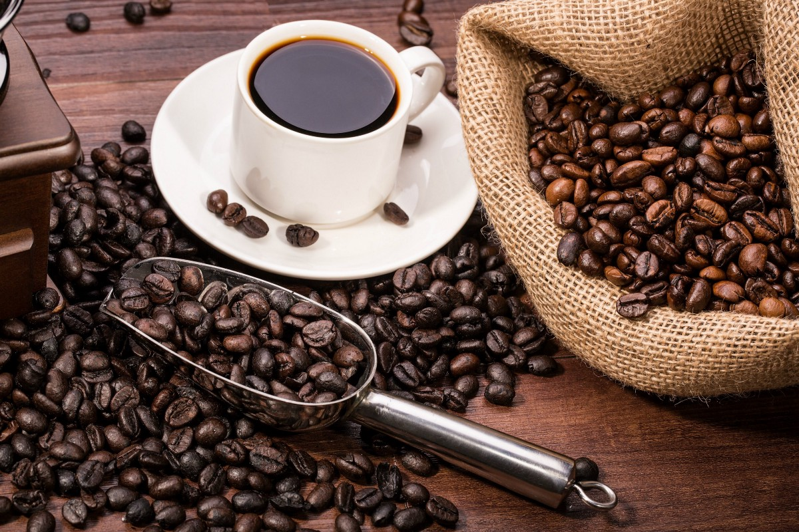
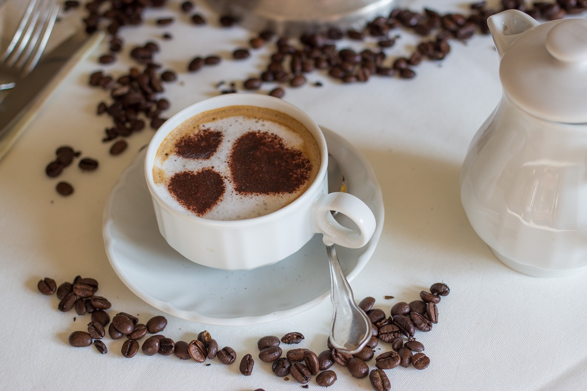
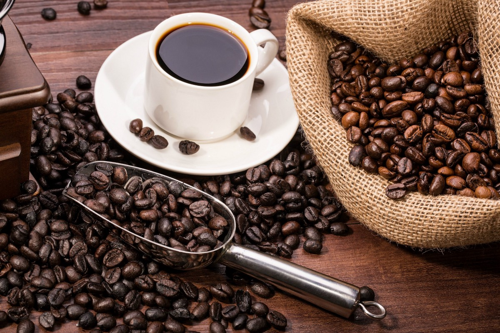
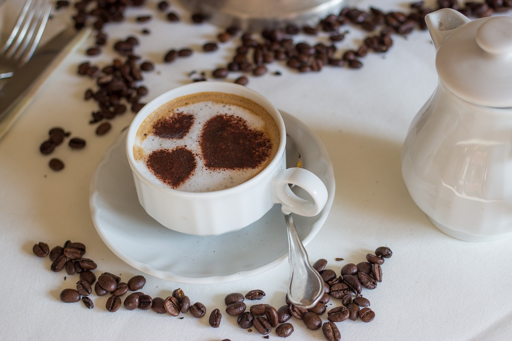

Кофе - это сваренный напиток, приготовленный из обжаренных кофейных зерен, семян ягод некоторых цветущих растений рода Coffea. Из кофейных плодов семена отделяются, чтобы получить стабильный сырой продукт: необжаренный зеленый кофе.

